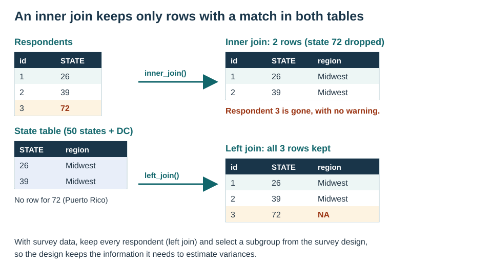

source("chapters/survey/_common.R")brfss_file <-file.path(processed_dir, "01-brfss.rds")brfss <-readRDS(brfss_file)# Optional files for the stacking example (see "Download the version files" below).version_files <-c(main ="LLCP2024.XPT",v1 ="LLCP24V1.XPT",v2 ="LLCP24V2.XPT",v3 ="LLCP24V3.XPT")have_versions <-all(file.exists(file.path(raw_dir, version_files)))# Re-read cached version data if any input file changes.knitr::opts_chunk$set(cache.extra =c(cache_context, list(data = tools::md5sum(c(brfss_file, file.path(raw_dir, version_files))) )))# Run every SQL example on SQLite, as in the data-preparation chapter.options(sqldf.driver ="SQLite")# Use sqldf's R-based string processing without a Tcl/Tk display dependency.options(gsubfn.engine ="R")
3.1 Overview
NoteTwo ways to combine data, for two different jobs
Survey analyses often need more than one file. Before writing any code, ask what the new file adds:
More people, with the same variables. Several questionnaire versions of the same survey, several survey years, or several sites. These files are stacked: their rows are placed one under the other with dplyr::bind_rows(), and their columns are lined up by name.
More variables, for the same people (or places). A table of state names and regions, area-level measures for each county, or a second instrument completed by the same respondents. These files are joined: their columns are added side by side with dplyr::left_join(), matching rows on a key.
Figure 3.1: Stacking keeps the columns and adds rows; a left join keeps the rows and adds columns.
Using a join where a stack is needed is a common mistake. If two questionnaire versions are joined on an identifier that never matches (for example, a key built as paste(SEQNO, 1) in one file and paste(SEQNO, 2) in the other), a full join keeps every row but treats each shared column as a different variable, so the result has STATE.x, STATE.y, and so on. Stacking the files gives one STATE column.
The data-preparation chapter walks through all six kinds of joins with small tables (Figure 1.2). This chapter applies the three most common operations to BRFSS:
stacking the BRFSS questionnaire version files to analyze an optional module asked in different states on different versions;
a left join that adds state names and Census regions to every respondent;
an inner join, which keeps only the respondents whose state is in both tables, and why survey analyses rarely want that.
3.2 Stacking questionnaire versions
3.2.1 Why BRFSS has version files
Every state asks the BRFSS core questions. States can also add optional modules, such as the Adverse Childhood Experiences (ACE) module, and some states split their sample across up to three questionnaire versions so that they can ask more modules, each of a part of their sample. CDC therefore releases:
the main (combined) file, with every respondent, the core questions, and the modules a state asked on all of its versions, weighted with _LLCPWT;
one version file for each questionnaire version (LLCP24V1.XPT, LLCP24V2.XPT, and so on), with the respondents who received that version, the modules asked on it, and a weight for that version (for example, _LCPWTV1).
To analyze a module, you need the respondents from every state that asked it, and each state’s respondents must come from the file in which it asked the module. That means stacking the pieces, each with its own weight. CDC explains the rules, with worked examples, in Complex Sampling Weights and Preparing Module Data for Analysis, published with each year’s data on the CDC BRFSS annual data page. Read the version for your survey year before you start.
3.2.2 Download the version files (optional)
The rest of the book uses only the main file. To run this section, download the SAS transport files for questionnaire versions 1, 2 and 3 from the CDC BRFSS 2024 multiple-questionnaire page, unzip them, and save them in data/brfss/raw/ as LLCP24V1.XPT, LLCP24V2.XPT and LLCP24V3.XPT (as with the main file, remove the trailing space from each unzipped file name). If the files are not there, the code in this section is shown but not run.
3.2.3 Step 1: Read each file with the same column names
To stack files, their columns must have the same names. Three things differ between the BRFSS files and are fixed as each file is read:
Underscore names._STATE, _STSTR, and _PSU need backticks in every line of code. Renaming them once (to STATE, STSTR, PSU) avoids that.
The weight. Each file has its own weight variable. Renaming each one to FINALWT lines the weights up in one column when the files are stacked.
The module. A module’s items are only in the files where it was asked. Reading with dplyr::any_of() takes the item when it is there, and the function adds an empty column when it is not.
Set module_item to one item from the module you want to analyze. The ACE item used here is an example: check the 2024 codebook for the item you need and its name.
Show / hide code
module_item <-"ACEDEPRS"# one item from your module (check the codebook)version_weights <-c(main ="_LLCPWT",v1 ="_LCPWTV1",v2 ="_LCPWTV2",v3 ="_LCPWTV3")read_version <-function(source) { path <-file.path(raw_dir, version_files[[source]]) weight <- version_weights[[source]]# Check: the weight we expect is in this file (read only the column names).if (!weight %in%names(haven::read_xpt(path, n_max =0))) {stop(weight, " is not in ", path, ". Check the codebook for this file.") } data <- haven::read_xpt( path,col_select = dplyr::any_of(c("SEQNO","_STATE","_STSTR","_PSU", weight, module_item )) ) |> dplyr::rename(STATE =`_STATE`,STSTR =`_STSTR`,PSU =`_PSU`,FINALWT = dplyr::all_of(weight) ) |> dplyr::mutate(source = source)if (!module_item %in%names(data)) { data[[module_item]] <-NA_real_# module not in this file }return(data)}pieces <- purrr::map(names(version_files), read_version) |> purrr::set_names(names(version_files))purrr::map_int(pieces, nrow)
main v1 v2 v3
457670 62629 58806 22848
3.2.4 Step 2: Find which file each state asked the module in
A state asked the module in a file if its respondents in that file answered the item. The table below shows, for each state and file, how many respondents there are and what share answered the item.
# A tibble: 13 × 4
STATE source n percent_answered
<dbl> <chr> <int> <dbl>
1 4 v2 3915 88.5
2 12 main 13086 75.6
3 13 main 7262 77.6
4 15 main 6636 88.8
5 19 v1 4249 90.6
6 23 v1 6019 87.9
7 32 main 2662 81.6
8 38 main 5860 84.5
9 39 v1 6349 85.6
10 40 v2 3413 92.8
11 51 main 6860 78.5
12 72 main 4309 96.9
13 78 main 1348 87.2
The rule for choosing the rows follows from the file structure:
A state with the module in the main file asked it of its whole sample. Take that state’s respondents from the main file only, with _LLCPWT.
Any other state asked the module on one or more versions. Take its respondents from each version file in which it asked the module, with that version’s weight.
A state must never be taken from the main file and a version file at the same time, because the version files hold the same people as the main file, and they would be counted twice.
Show / hide code
states_main <- coverage |> dplyr::filter(source =="main") |> dplyr::pull(STATE)states_v1 <- coverage |> dplyr::filter(source =="v1", !STATE %in% states_main) |> dplyr::pull(STATE)states_v2 <- coverage |> dplyr::filter(source =="v2", !STATE %in% states_main) |> dplyr::pull(STATE)states_v3 <- coverage |> dplyr::filter(source =="v3", !STATE %in% states_main) |> dplyr::pull(STATE)# Check: no state is taken from the main file and a version file.stopifnot(length(intersect(states_main, c(states_v1, states_v2, states_v3))) ==0)list(main = states_main, v1 = states_v1, v2 = states_v2, v3 = states_v3)
The data show where the item was answered; CDC’s table 2024 Modules by State by Data Set and Weight says where the module was asked. The lists below are typed in from that table, as Federal Information Processing Standards (FIPS) state codes. The check stops if the data and the table disagree.
Show / hide code
# From CDC's 2024 table, Adverse Childhood Experiences module:module_table <-list(# Main file (_LLCPWT): Florida, Georgia, Hawaii, Nevada, North Dakota, Virginia,# Puerto Rico, US Virgin Islandsmain =c(12, 13, 15, 32, 38, 51, 72, 78),v1 =c(19, 23, 39), # Version 1 (_LCPWTV1): Iowa, Maine, Ohiov2 =c(4, 40), # Version 2 (_LCPWTV2): Arizona, Oklahomav3 =numeric(0) # Version 3 (_LCPWTV3): no state)# Check: the states found in the data are the states in CDC's table.stopifnot(setequal(states_main, module_table$main),setequal(states_v1, module_table$v1),setequal(states_v2, module_table$v2),setequal(states_v3, module_table$v3))
ImportantUse the table for your module and year
The lists above are for the ACE module in 2024. For another module or year, type the lists in from that year’s table and keep the check. If the data and the table disagree, find out why before analyzing the module.
3.2.5 Step 3: Stack the pieces
Show / hide code
stacked <- dplyr::bind_rows( pieces$main |> dplyr::filter(STATE %in% states_main), pieces$v1 |> dplyr::filter(STATE %in% states_v1), pieces$v2 |> dplyr::filter(STATE %in% states_v2), pieces$v3 |> dplyr::filter(STATE %in% states_v3))# Check: a state comes from one source only, unless it asked the module on more than# one version.stacked |> dplyr::count(STATE, source)
# A tibble: 13 × 3
STATE source n
<dbl> <chr> <int>
1 4 v2 3915
2 12 main 13086
3 13 main 7262
4 15 main 6636
5 19 v1 4249
6 23 v1 6019
7 32 main 2662
8 38 main 5860
9 39 v1 6349
10 40 v2 3413
11 51 main 6860
12 72 main 4309
13 78 main 1348
3.2.6 Step 4: Adjust the weights for states with more than one version
Each version’s weight makes that version’s respondents represent the whole adult population of the state. A state that asked the module on two versions is therefore represented twice, once by each version’s respondents. To count it once, multiply each version’s weights by that version’s share of the state’s stacked sample, so that the shares within each state add up to 1:
\[
\text{FINALWT\_ADJ} = \text{FINALWT} \times
\frac{n_\text{version in the state}}{n_\text{all versions in the state}}
\]
States that come from a single file have a share of 1, so their weights are unchanged. If the versions are of similar size, CDC’s guidance also allows a constant (0.5 for two versions, about 0.33 for three).
In 2024 no state asked the ACE module on more than one version, so every share below is 1 and the adjustment leaves the ACE weights unchanged: the table printed after the check is empty. The step is still part of the recipe, because other modules need it. For example, Michigan asked the Cognitive Decline module on versions 1 and 3, so a stacked Cognitive Decline file would take Michigan’s respondents from both versions, and their weights would be multiplied by each version’s share.
Show / hide code
stacked <- stacked |> dplyr::add_count(STATE, name ="n_state") |> dplyr::add_count(STATE, source, name ="n_version") |> dplyr::mutate(FINALWT_ADJ = FINALWT * n_version / n_state)# Check: within every state, the version shares add up to 1.shares <- stacked |> dplyr::distinct(STATE, source, n_version, n_state) |> dplyr::summarise(total_share =sum(n_version / n_state), .by = STATE)stopifnot(isTRUE(all.equal(shares$total_share, rep(1, nrow(shares)))))dplyr::filter(stacked, n_version < n_state) |> dplyr::distinct(STATE, source, n_version, n_state)
# A tibble: 0 × 4
# ℹ 4 variables: STATE <dbl>, source <chr>, n_version <int>, n_state <int>
Make the adjustment right after stacking, before you drop any rows for missing answers or select a subgroup, so that the shares describe each version’s full sample in the state.
3.2.7 Step 5: Declare the survey design
The stacked data use the adjusted weight with the same strata and PSUs as before. nest = TRUE tells the survey package that PSU codes repeat across strata.
From here, the module is analyzed exactly as the rest of this part of the book analyzes the main file: clean and recode the items (Chapter 4), then describe and model them with the design.
3.3 Joining a lookup table
BRFSS stores each respondent’s state as a FIPS code (_STATE): 26 is Michigan and 39 is Ohio. A small lookup table, data/lookup/states.csv, gives each code a name, a postal abbreviation, and a US Census Bureau region. A left join adds those columns to every respondent and keeps every respondent, whether or not their code is in the lookup.
3.3.1 Step 1: Import the lookup table and check its key
The key is the column the join matches on. In the lookup, each code must appear exactly once; otherwise a respondent would match two rows and be duplicated (see the one-to-many example in the data-preparation chapter).
Show / hide code
states <- utils::read.csv("data/lookup/states.csv",colClasses =c(fips ="numeric",state_name ="character",state_abbr ="character",census_region ="character" ))# Check: one row per FIPS code, and no blank keys.stopifnot(!anyNA(states$fips), !anyDuplicated(states$fips))nrow(states)
[1] 54
Show / hide code
utils::head(states)
fips state_name state_abbr census_region
1 1 Alabama AL South
2 2 Alaska AK West
3 4 Arizona AZ West
4 5 Arkansas AR South
5 6 California CA West
6 8 Colorado CO West
3.3.2 Step 2: Look for codes that will not match
An anti join returns the rows of the first table that have no match in the second. Run it in both directions before joining.
Show / hide code
# Respondents whose state code is not in the lookup: these would get blank names.no_lookup <- dplyr::anti_join( brfss, states,by = dplyr::join_by(`_STATE`== fips))nrow(no_lookup)
[1] 0
Show / hide code
# Lookup rows with no respondents: harmless, but worth knowing.dplyr::anti_join( states, dplyr::distinct(brfss, `_STATE`),by = dplyr::join_by(fips ==`_STATE`))
fips state_name state_abbr census_region
1 47 Tennessee TN South
Every respondent’s code is in the lookup. The lookup has one row with no respondents: Tennessee, which is not in the 2024 data (Chapter 2).
3.3.3 Step 3: Join
relationship = "many-to-one" states what we expect: many respondents share one state, and each state has one lookup row. If that is not true, dplyr stops with an error instead of quietly adding rows.
brfss_joined <- brfss |> dplyr::left_join( states,by = dplyr::join_by(`_STATE`== fips),relationship ="many-to-one" )# Check: the same respondents, and every one has a state name.stopifnot(nrow(brfss_joined) ==nrow(brfss),!anyNA(brfss_joined$state_name))brfss_joined |> dplyr::count(census_region)
# A tibble: 5 × 2
census_region n
<chr> <int>
1 Midwest 126242
2 Northeast 103902
3 South 113647
4 US territory 7317
5 West 106562
Show / hide code
# Double quotes delimit SQL column names; SQLite also accepts these underscore names unquoted.region_counts_sql <- sqldf::sqldf('SELECT s.census_region, COUNT(*) AS n FROM brfss AS b LEFT JOIN states AS s ON b."_STATE" = s.fips GROUP BY s.census_region ORDER BY s.census_region')region_counts_sql
census_region n
1 Midwest 126242
2 Northeast 103902
3 South 113647
4 US territory 7317
5 West 106562
Show / hide code
# Check: the dplyr and SQL joins give the same counts.region_counts_dplyr <- brfss_joined |> dplyr::count(census_region, name ="n") |> dplyr::arrange(census_region)stopifnot(identical(region_counts_dplyr$census_region, region_counts_sql$census_region),identical(as.numeric(region_counts_dplyr$n), as.numeric(region_counts_sql$n)))
TipJoining area-level data
The same steps work for any table with one row per place: county poverty rates from the American Community Survey, state policy indicators, and so on. Check the key, look for unmatched codes in both directions, state the relationship, and confirm the row count afterwards. Survey weights describe people, not places, so the joined columns are analyzed as characteristics of each respondent’s state.
3.4 Inner join: keep only matches in both tables
A left join keeps every respondent. An inner join keeps only the rows whose key is in both tables: a respondent whose state has no row in the second table is dropped, without a warning. Figure 3.2 shows the difference.

Figure 3.2: An inner join drops the respondent whose state is not in the second table; a left join keeps that respondent with a blank region.
Inner joins are common when a second table covers only some places. Suppose an area-level table, such as one built from the American Community Survey, has a row for each of the 50 states and the District of Columbia but none for the territories. Here we make such a table from the lookup.
3.4.1 Step 1: Make a table that covers fewer states
Show / hide code
states_50_dc <- states |> dplyr::filter(census_region !="US territory")# Check: the 50 states and the District of Columbia.stopifnot(nrow(states_50_dc) ==51)
inner_count_sql <- sqldf::sqldf('SELECT COUNT(*) AS n FROM brfss AS b INNER JOIN states_50_dc AS s ON b."_STATE" = s.fips')inner_count_sql
n
1 450353
3.4.3 Step 3: Find out who was dropped
An inner join reports nothing about the rows it drops, so count them yourself. The anti join from Section 3.3 lists them.
Show / hide code
dropped <- dplyr::anti_join( brfss, states_50_dc,by = dplyr::join_by(`_STATE`== fips))# Check: the dropped and kept respondents add up to everyone, and SQL agrees with dplyr.stopifnot(nrow(dropped) +nrow(brfss_50_dc) ==nrow(brfss), inner_count_sql$n ==nrow(brfss_50_dc))dropped |> dplyr::count(`_STATE`) |> dplyr::left_join(states, by = dplyr::join_by(`_STATE`== fips)) |> dplyr::select(`_STATE`, state_name, n)
# A tibble: 3 × 3
`_STATE` state_name n
<dbl> <chr> <int>
1 66 Guam 1660
2 72 Puerto Rico 4309
3 78 US Virgin Islands 1348
The inner join dropped the 7,317 respondents from the territories.
ImportantInner joins and survey weights
Dropping rows before the survey design is declared is a way of selecting a subgroup, and for survey data it is the wrong way. The design needs every respondent’s stratum and primary sampling unit to estimate standard errors correctly, even when an estimate is about a subgroup. Keep every respondent with a left join, declare the design, and then select the subgroup from the design object, as Section 5.5 does for respondents with a known income (for example, design |> dplyr::filter(census_region != "US territory")).
Dropping entire independently sampled strata can be a special case, but simply calling the joined result a new dataset does not fix its variance estimates. Subsetting the design is the safer general workflow.
The next chapters use brfss_joined, the result of the left join, so every respondent is kept.
In the stacking example, what would go wrong if Michigan were taken from both the main file and the version 1 file?
Why must the weights be adjusted before rows with a missing module answer are dropped?
You receive a county table with two rows for one county (an old and a new name). What would the relationship = "many-to-one" argument do, and how would you fix the lookup?
You inner-join a survey that records each respondent’s county to a county table, and the result has 20,000 fewer rows than the survey. What two checks would you run, and how would you then estimate a prevalence for the counties in the table?
TipSuggested answers
Michigan’s version 1 respondents are also in the main file, so they would be counted twice, and Michigan would represent about twice its adult population.
The shares should reflect each version’s full sample in the state. Dropping rows first makes the shares depend on who answered, which changes the weights in a way the survey design does not intend.
dplyr would stop with an error, because some respondents would match two lookup rows. Keep one row per county code in the lookup (for example, the current name) and check anyDuplicated() again before joining.
Run an anti join to see which county codes did not match and how many respondents have each, and check whether the codes are missing from the county table or stored differently (for example, as text with leading zeros). Then left-join instead, declare the survey design on all respondents, and filter the design to the counties in the table.